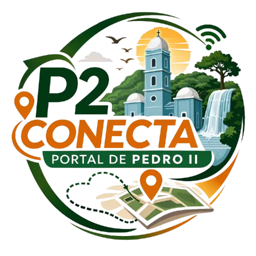

Eventos
Descubra os melhores eventos culturais, festivais e apresentações da região.

Explore pontos turísticos, eventos culturais, hospedagens e experiências únicas na Suíça Piauiense.
Descubra os melhores eventos culturais, festivais e apresentações da região.

Conheça os lugares mais encantadores e monumentos históricos imperdíveis.

Conheça os principais empreendimentos que impulsionam a economia e o turismo local.